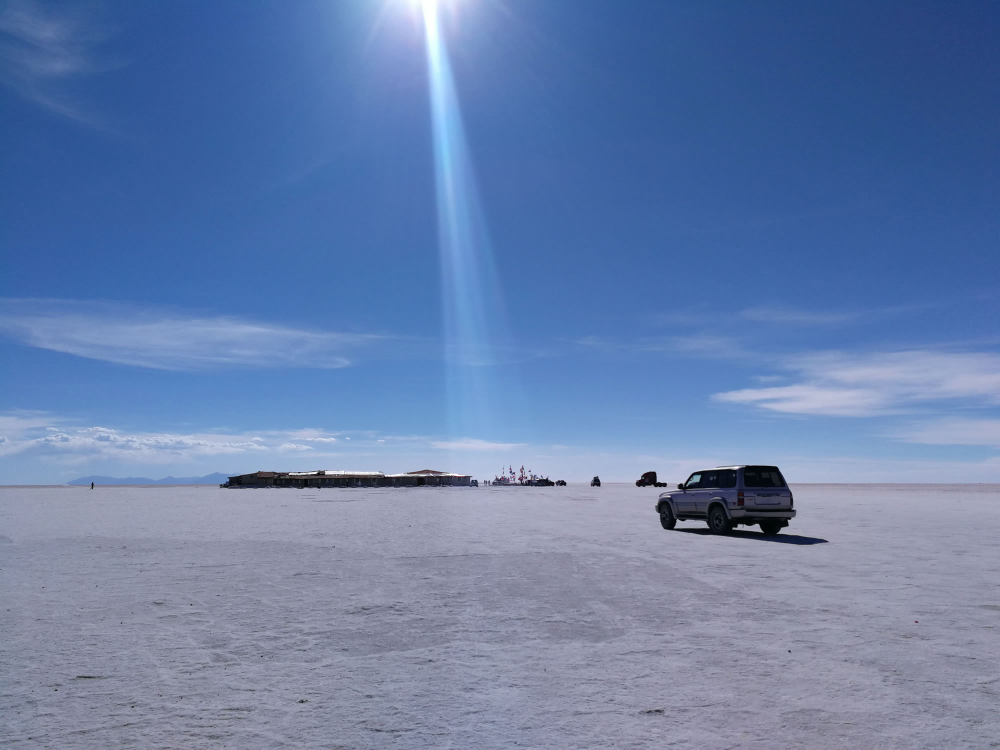
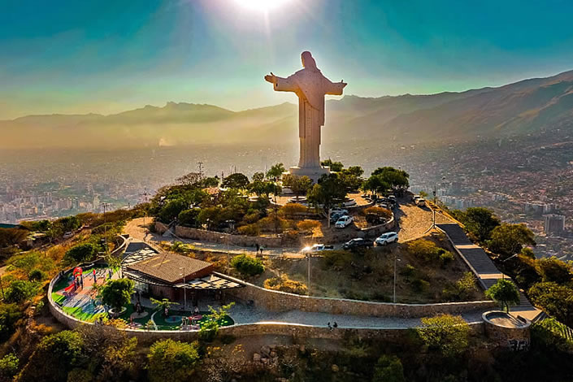

Lago Titicaca
El lago navegable más alto del mundo, entre Bolivia y Perú.

El mayor desierto de sal continuo y alto del mundo.
El lago navegable más alto del mundo, entre Bolivia y Perú.

Uno de los monumentos más altos de Sudamérica.